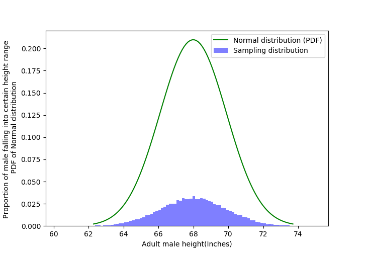

Gaussian Distribution Implementation 
Now let's see a real life example for Gaussian Distribution and Implement it in python. Here we use a dataset containing Adult's Height(inches) and Weight(pounds).
(You can find the dataset at http://wiki.stat.ucla.edu/socr/index.php/SOCR_Data_Dinov_020108_HeightsWeights.)
Here we will study how Adult's Height(inches) is distributed. And you should try to study the distribution of Adult's Weight(pounds).
So let's get started.
First get the data from http://wiki.stat.ucla.edu/socr/index.php/SOCR_Data_Dinov_020108_HeightsWeights.
Our data contains \(25,000\) Adult's Height(inches) and Weight(pounds).
So let's load this data in python.
import numpy as np
from scipy.stats import norm
import pandas as pd
import matplotlib.pyplot as plt
path_csv = 'height_weight.csv'
population = pd.read_csv(path_csv)
print(population.head())
Now extract all the Heights from the data.
population_height = population["Height(Inches)"]
print(population_height.head())
Now let's plot a histogram out of population_height.
fig, ax = plt.subplots()
num_bins = 100
# Histogram(PMF) of Sampling Distribution
counts, bins = np.histogram(population_height ,
np.linspace(min(population_height),
max(population_height),
num_bins)
)
ax.hist(population_height ,
bins[:-1],
facecolor='blue',
alpha=0.5,
color="b",
weights=(1/sum(counts))*np.ones_like(population_height),
label="Sampling distribution")
plt.xlabel("Adult male height(Inches)")
plt.ylabel("Proportion of male falling into certain height range")
plt.show()
So how can we visually inspect our data to be normally distributed.
One can say that we should impose a Normal Distribution with emperical mean and emperical variance on this histogram and see if our data follows a Normal Distribution.
But height of histogram denotes the probability of a male height falling into certain range, but the height of a Normal Distribution does not denotes probability. So we can't get any info by imposing a Normal Distribution on our histogram.Let's impose a Normal Distribution on our histogram and see it overselve.

Code to plot this (python)
fig, ax = plt.subplots()
num_bins = 100
# Histogram(PMF) of Sampling Distribution
counts, bins = np.histogram(population_height ,
np.linspace(min(population_height),
max(population_height),
num_bins)
)
ax.hist(population_height ,
bins[:-1],
facecolor='blue',
alpha=0.5,
color="b",
weights=(1/sum(counts))*np.ones_like(population_height),
label="Sampling distribution")
# PDF of Normal Distribution
mean, std = np.mean(population_height), np.std(population_height)
rvs = np.linspace(mean - 3*std, mean + 3*std, 100)
pdf = norm.pdf(rvs, mean, std)
ax.plot(rvs, pdf, c="g", label="Normal distribution (PDF)") # N({'{:.2f}'.format(mean)}, {'{:.2f}'.format(std)})
plt.xlabel("Adult male height(Inches)")
plt.ylabel("Proportion of male falling into certain height range \n PDF of Normal distribution")
leg = ax.legend()
plt.show()
And the answer is CDF, CDF of Normal distribution and Sampling distribution both denotes same thing. So we can overlay CDF of Normal distribution and CDF of Sampling distribution on each other, and see if both CDF overlay nicely.So let's plot it,
fig, ax = plt.subplots()
num_bins = 100
# CDF of Sampling Distribution
counts, bins = np.histogram(population_height ,
np.linspace(min(population_height),
max(population_height),
num_bins)
)
pmf = counts/sum(counts)
cdf = np.cumsum(pmf)
ax.scatter(bins[:-1], cdf, c='b', marker="+", label="Sampling distribution CDF")
# CDF of Normal Distribution
mean, std = np.mean(population_height), np.std(population_height)
rvs = np.linspace(mean - 3*std, mean + 3*std, 100)
cdf = norm.cdf(rvs, mean, std)
ax.plot(rvs, cdf, c='g', label="Normal distribution CDF")
leg = ax.legend()
plt.xlabel("Adult male height(Inches)")
plt.ylabel("CDF of Sampling Distribution \n CDF of Normal Distribution")
plt.show()
 Now we can say that our data do follow Normal Distribution (with emperical mean and emperical variance).
Now we can say that our data do follow Normal Distribution (with emperical mean and emperical variance).